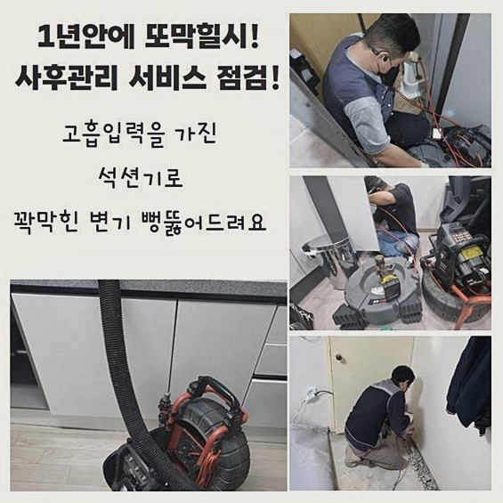
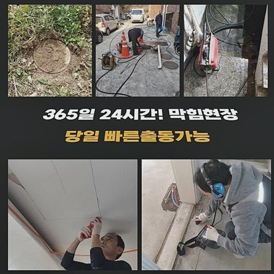
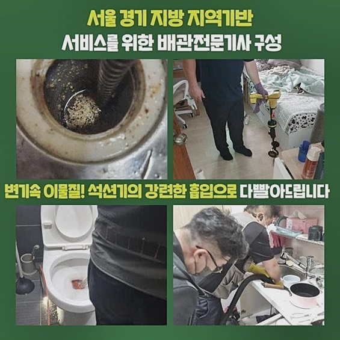
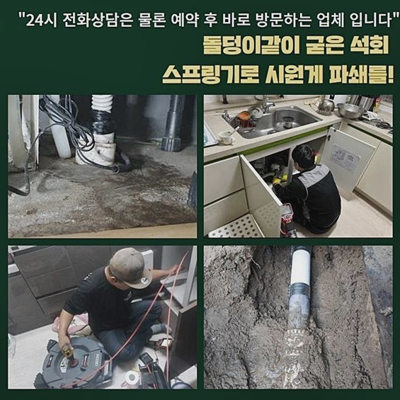
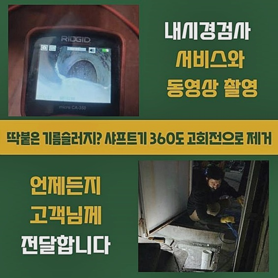

🏠 강북 미아동오수관막힘 송천동 하수구뚫는비용 물샘전문업체
용인 싱크대막힘 전문 시공 후기

📋 작업 개요
- 위치: 용인
- 서비스 유형: 싱크대막힘, 하수구막힘, 배관막힘, 누수수리, 역류해결, 뚫는업체, 고압세척, 설비공사
- 작업 일시: 2024. 8. 17. 9:46
- 업체명: 하수구수사대 (010-5615-2118)
🔍 문제 상황
강북 미아동오수관막힘 송천동 하수구뚫는비용 물샘전문업체
이번 시공 장소는 외식업에 종사하시는 고객님의 문의를 접수해서 원활하게 되돌려 드린 곳인데요
특히나 상업 시설을 책임지는 장소라면 꽉 막힌 하수구가 심한 데미지를 입히게 되겠죠
정상적인 손님 맞이를 실행할 수 없기에 어려움이 계속 확대될테니 이슈를 얼른 제거해 주는 활동이 필요한 겁니다
지역에서 꽤나 입소문이 난 외식업에 종사하시는 분이셨는데 불현듯 물 배출이 안 되면서 상당한 심적 부담을 감내하고 계시는 상태였습니다
얼마 뒤면 식사시간이라 손님이 방문할 예정이라 하셔서 뚫음 장치를 올바르게 챙겨서 말씀주신 주소로 향했네요
안절부절 못하는 고객님의 심경을 이해했기에 지체 없이 두루 살펴 보았더니 고쳐드려야 할 오류들이 명백히 발견되었습니다
상황을 정확하게 알아보려고 주방 씽크의 물을 흘려보내 봤더니 전혀 물의 배출이 발생하지 않는 말그대로 고립 상태였어요
보름 전 쯤에 처음으로 평상시랑 다르다는 걸 아셨지만 나중에 처리하자 싶어서 별도로 요청을 하지않으셨다 해요
약간이라도 막힘 증세가 눈에 들어온다면 신속하게 기술자에게 문의하시는 스피드가 소중합니다
장기적으로 지장을 주는 공사가 필요한 상황이면 어쩌나 염려하시는 사장님을 진정시켜드리면서 일단 문제장소를 세심하게 점검했습니다
그 이후는 어떤 효율적 노선으로 임무를 완수해 줄지에 대해서도 이어서 전달드렸습니다
물의 정상적인 배출이 좀처럼 수행되지 않으니 물길을 뚫으려는 목적으로 석션 작업을 완료했어요

🔎 원인 분석
💡 전문가 진단: 정밀 진단 장비를 사용하여 슬러지의 고착 여부를 판명하고 타격/세척 작업을 실시했습니다.
윗 부분을 우선 석션 기기로 정돈한 뒤 점검 장치를 동작시켜서 신중히 방향을 조절해서 관측을 시작했어요
최상의 결과물을 달성하려면 배관의 속을 신중히 들여다보면서 문제를 건져올려야 하는데요
추후 다시 출장올 필요 없도록 완성도높게 뚫어내려면 하자의 뿌리가 무엇일지 추론하는 과정이 필수입니다!
오류를 찾는 스킬이 엄청난 전문가라 해도 장치의 도움 없이 잘못된 장소를 알아차리는 것은 현실적으로 어렵습니다
배관 전용 기계들을 두루 써서 문제를 진단하는 과정 자체가 제일 중대한 작업입니다
이번 식당도 하수관 내에 특화된 내시경 노즐을 밀어넣어서 어떠한 물질이 껴서 막힘이 초래됐나 알아봤습니다
눈으로 보긴 어려운 깊이까지 카메라로 영상을 찍어보았는데 각종 오염원들이 다닥다닥 붙은 채 꽉 차 있는 고착된 상황이었어요
조금의 물이라도 흘러갈 여유가 허용되지 않게끔 갑갑하게 폐쇄되어 있었네요
무슨 구성물인지를 분명하게 밝혀내고 나서는 막힘과 역류의 동기에 대해 고객님께도 상세하게 이야기를 해드리며 계획을 밝혔습니다
원활한 흐름이 필요한 하수관이 찝찝하게 작동되는 듯 하다면 현재 어떠한 상황인지 카메라로 들여다보는 게 밑바탕이 되어야 해요
그중에서도 효율적이라 생각되는 알맞은 시공을 고를 수 있으니 작동의 곤란함을 완전히 처리할 수 있게 됩니다
위부터 내시경을 순차적으로 진입을 시켜가면서 파이프의 안쪽 상황들을 빠지지 않고 찾아냈어요
보편적으로 음식을 판매하는 요식업계는 식용기름을 다수 이용하는 게 공통점이기 때문에 슬러지가 도화선이 되는 모습을 많이 보곤 하는데요

🔧 작업 과정
하지만 모호한 추리만으로 시공에 임하지 않으며 전용 기기를 작동시켜서 짐작한 바를 확인하는 돌다리를 두들겨보는 작업에 들어갑니다
내부에 고여있는 노폐물들을 살펴볼 수 있었고 이제는 정리를 돕는 샤프트장비로 잔여물을 소거해 나갈 차례입니다
혹시 소음이 없는 관통기를 이용한 작업은 어려운 거냐는 제안을 해주셨어요
단순한 막힘이라고 판별을 마친다면 간단한 작동방식의 기기만으로 막힌 쪽을 뚫어내려고 냉철하게 판단하고 있어요
허나 가벼운 막힘에 쓰는 철제 스프링으로 구성된 장치로써 이물질을 고정시켜서 끌어올리는 데 유리한 원리를 지니고 있어요
허나 내측의 이물질이 강하게 말라붙어 있는 현상을 지니고 있으면 전혀 유용성이 없고 무의미해요
이런 측면을 상세하게 알리며 이해시켜 드리고 해달라고 말씀하셔서 바로 샤프트 단계에 돌입했습니다
내시경 어두운 곳을 비춰줄 카메라로가며 하부에 매립되어있는 위치까지 고사양의 기기를 모니터링을 수행했습니다
보이지 않는 깊은 하수관의 조건을 구체적으로 밝히고 식별하게 해주어 모태가 되는 문제점들을 추출할 수 있게 하는 시공의 주춧돌입니다
이물질을 잡아 올리는 절차만 거쳐서는 완벽하게 고치기 힘들다는 판단이 내려졌기에 오염물질을 잘게 쪼개서 완전 회복된 하수구로 형성하는 게 필요해 보였어요
관로의 벽체에서 이물질들이 자취를 감추지 않으면 동일한 문제 요소가 되풀이될지 모를 일이니 시공 시 완벽하고 꼼꼼한 세정을 해야만 했네요
입구 쪽을 다루는 시기에서는 막힌 상태 그대로 별다른 차도가 없는 상황으로 확인됐어요
오랫동안 축적되어 온 부패한 물질들이 뭉쳐져서 말라붙어 있었으며 공백이 있어야 할 통로가 일말의 틈도 허용하지 않았어요
정체 상황이 나쁜 곳이라면 완수까지 훨씬 오래 소요되며 품도 더 들어갑니다
하자 없는 완벽시공을 목표로 내부세척이 완성되기까지 샤프트 기기를 돌려서 단계를 수행했습니다
스피디하게 도는 노커가 오염물질을 잘게 부수고 동시에 걸어 올려주며 위생을 회복시켜주고 물의 정상적인 흐름을 다시 확보하는 것에 커다란 지원이 됩니다
지속적인 업무력 투입과 고성능 장치의 보조로 정체됐던 하수구 속이 열리는 게 보였습니다
시간이 갈수록 변화가 점차 가시화되다가 완벽한 초기 세팅을 정상화하게 되어 전기능이 이상 없이 성취 되었습니다
배관의 깊은 곳까지 오염물질이 절대적으로 소거된 장면을 확인한 이후에는 통수 시험을 이어가 보았어요
식당 싱크대에서 하수를 아래로 내려보내곤 가만히 살펴보니 초반과는 다르게 하수가 통쾌한 소리를 내며 흘러가는 상태를 인식할 수 있었어요


✅ 작업 완료
단순히 구멍만 냈다고 손 떼는 것이 아니고 시공 퀄리티가 양호한지도 다수의 테스트로 체크하여 안정화에 기여합니다
또 다시 시공을 받는다면 새 공사에 따른 금전을 소모할 수 있으므로 귀중한 고객님의 재산을 안전하게 지키기 위해서 적극적으로 임하고 있습니다
이번 현장같이 설비에 특정한 마찰이 생긴다면 거주지 상업지 가리지 않고 어려움을 감당하셔야 합니다
물의 흐름이 끊기기 전에 주의깊게 케어하는 것이 문제 후의 처리보다 필수불가결한 것입니다
설비적인 곤란함을 겪으며 전문적인 조언과 조치가 들어가야 하는 현장이라면 더는 미루지 마시고 접수만 해주시면 끝납니다
하수구의 원상복구를 위해서 불러주신 현장이 어디라도 밤낮없이 달려가겠습니다!



⚠️ 베란다 누수 및 방수 관리 방법
- ✅ 비가 많이 올 때 창틀 주변이나 아래층 천장에 얼룩이 생기는지 정기적으로 확인해 보세요.
- ✅ 우수관 주변 실리콘 마감이 들뜨거나 깨진 틈새가 있는지 손상 여부를 수시로 체크하세요.
- ✅ 베란다 바닥 타일의 줄눈(메지)이 소실되면 그 틈으로 물이 침투하여 누수가 유발됩니다.
- ✅ 누수 의심 증상 발견 시 방치하면 아래층 손실이 커지므로 즉시 전문가의 진단을 받으십시오.
💡 핵심 정리
- 확실한 장비 작업(내시경 점검 및 샤프트 스케일링)으로 원인을 뿌리 뽑습니다.
- 작업 후 1년 이내에 동일한 부위 재발 시 100% 무상 A/S 서비스를 보장합니다.
- 서울 · 경기 · 인천 전 지역에 24시간 언제든 긴급 출동할 수 있도록 항시 대기 중입니다.
❓ 자주 묻는 질문 (FAQ)
🚨 용인 싱크대막힘 문제로 고민이신가요?
정확한 원인 진단과 확실한 시공으로 재발 없는 해결을 약속드립니다.
24시간 긴급 출동 | 서울 · 경기 · 인천 전지역 | 1년 내 재발 시 무상 A/S